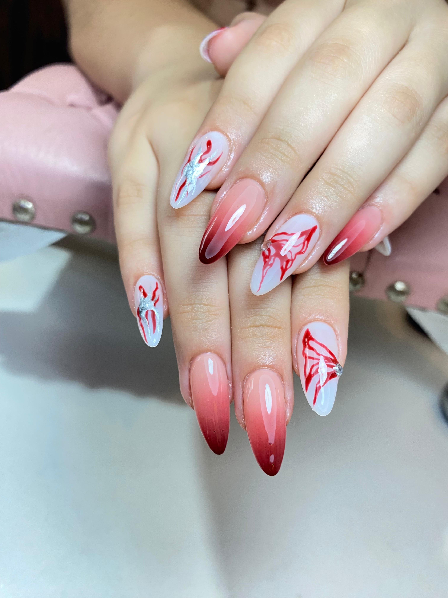
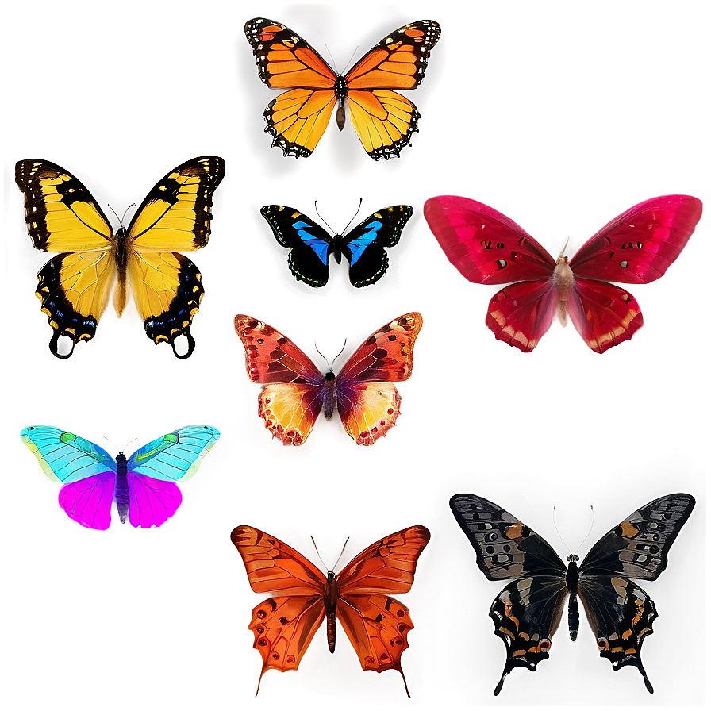

Febrero es el mes del amor y la renovación
Los diseños con mariposas se han convertido en una tendencia que aporta frescura,
feminidad y un toque artístico a cualquier look. En la imagen,
puedes apreciar una propuesta ideal para este mes especial: uñas en tonos
degradados de rojo y nude que evocan romanticismo, combinados con mariposas delineadas
en rojo intenso sobre una base blanca.Estos detalles de mariposas, acompañados de pequeños
destellos plateados, aportan un aire delicado y sofisticado, perfecto para quienes desean
destacar sus manos en ocasiones especiales o simplemente consentirse.
Si buscas un estilo moderno, artístico y lleno de encanto para febrero
las uñas con mariposas son la elección perfecta. Atrévete a volar alto con tu creatividad
y deja que tus manos hablen por ti este mes del amor y la amistad.El acabado brillante y
la forma almendrada de las uñas realzan aún más el diseño, haciendo que cada dedo cuente una
historia de transformación y belleza.

Comentarios
Súper recomendable, la mejor atención y el trabajo impecable. ¡Volveré pronto! 🌷